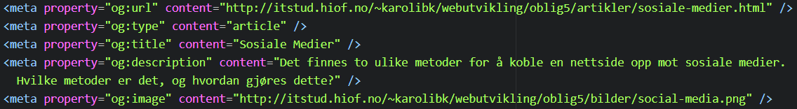
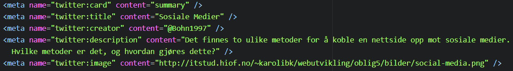

Det finnes to ulike metoder for å koble en nettside opp mot sosiale medier. Det er å optimalisere nettsidene for deling i sosiale medier og inkludere informasjon fra sosiale medier i nettsidene.
Optimalisere for deling
Når man deler en URL i sosiale medier vil tjenesten forsøke å hente ut informasjon fra nettsiden. Denne informasjonen benyttes til å lage informative forhåndsvisninger av innholdet og til å kategorisere og prioritere innholdet for visning i andre brukeres nyhetstrømmer. Det er følgelig viktig å optimalisere nettsiden slik at den kan tolkes på best mulig måte. De ulike tjenestene har ulike krav til hvordan nettsiden skal formateres.
Det meste innholdet deles til Facebook som en nettadresse, så det er viktig å markere nettstedet sitt med Open Graph-koder for å ta kontroll over hvordan innholdet skal vises på Facebook. Uten disse kodene bruker Facebook Crawler intern heuristikk for å gi den beste gjettingen om tittelen, beskrivelse og forhåndsvisningsbildet for innholdet ditt.
Open Graph går ut på at man legger inn meta-tagger i head-seksjonen av nettsiden.
Kode
For å legge til Facebook markup på denne siden, benyttet jeg følgende kode:
og:url definere nettadressen til den saken som skal deles på Facebook. Her er det viktig å få med hele den udekorerte nettadressen som ikke inneholder sesjonsvariabler, brukeridentifiserende parametere eller tellere.
og:type definerer hva det er som skal deles (medietypen i innholdet), i dette tilfellet en artikkel.
og:title definere tittelen på det som skal deles. Her er det lurt å unngå merkevarer som f.eks. navnet på nettstedet.
og:description er en beskrivelse av det som skal deles. Dette bør være en kort beskrivelse som fenger leseren.
og:image definerer bildet som skal brukes i delingen på Facebook (i form av nettadressen til bildet).
Twitter baserer seg på et lignende system som Facebook, men benytter Twitter Cards istedenfor Open Graph. Med Twitter Card kan man legge til bilder, video og medieopplevelser til Tweets, noe som bidrar til å drive trafikk til nettstedet ditt. Ved å legge til noen få linjer med markering på nettsiden, vil brukere som tweeter linker til innholdet ditt ha et "kort" lagt til tweeten som er synlig for deres følgere.
Kode
For å legge til Twitter Card på denne siden, benyttet jeg følgende kode:
twitter:card definerer korttypen. I dette tilfellet har jeg benyttet meg av Summary som angir en liten normal twitter story. Et annet alternativ er å benytte summary_large_image som angir en twitter post med stort illustrasjonsbilde.
twitter:title definerer tittelen på det som skal deles.
twitter:creator brukes for å linke opp mot en twitterkonto for forfatteren av det som deles.
twitter:description er en beskrivelse av det som skal deles.
twitter:image definerer illustrasjonsbildet til det som skal deles.
I tillegg til denne siden, har jeg markert følgende sider for bruk med Facebook og Twitter.Inkludere data fra sosiale medier
En annen mulighet er å inkludere informasjon fra sosiale medier i nettsiden. Dette krever i utgangspunktet noe programmering eller avansert HTML, men tjenestene har laget verktøy som produserer denne koden på en enkel måte.
Facebook har er et stort bibliotek med ulike social plugins som man kan benytte i nettsiden sin. Verktøy for å lage koden finner man på developers.facebook.com.
Twitter har et tilsvarende system for å lage widgets/skjermelementer av ulike typer. Disse finner man på twitter.com.